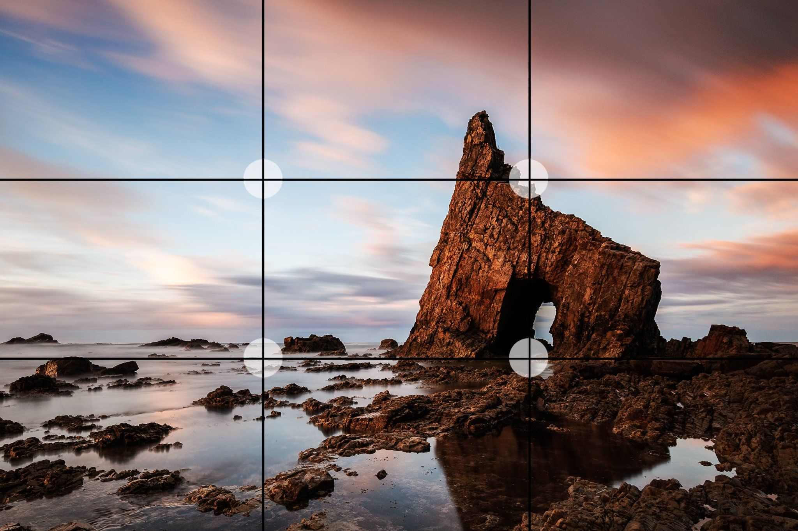

Photography Tips
Rule of Two thirds
- This well-known photography rule still holds true. When in doubt, make sure you're using the rule of thirds to set up your photo.
- When framing a photo, imagine the scene divided up as above. Think about what elements of the photo are most important, and try to position them at or near the lines and intersections of the grid. They don't have to be perfectly lined up as long as they're close.
- For landscpaes: place it along one of the horizontal lines
- For Vertical Subjects: split a photo in two, in much the same way as a horizon can do horizontally. To avoid this, position them off-centre in your composition

Is the rule interesting to implement?.